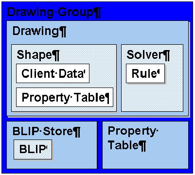

This document describes the file format of the Office Drawing Layer (Escher). With this document and knowledge of the host application's file format, the reader should be able to construct and interpret an Escher file stream.

Figure 1 -- Containership Hierarchy
A few other points are worth noting| Atoms | Records that contain information about an Escher object and are kept inside containers. |
| Containers | Records that keep atoms and other containers in a logical and organized way. |
The common record header is an 8-byte structure defined in msodr.h as follows:
typedef struct MSOFBH
{
struct
{
ULONG ver : 4;
ULONG inst: 12;
ULONG fbt : 16;
};
ULONG
cbLength;
} MSOFBH;
The fields are:
| Record Type | Indicates the signature or type of the record. Each record has a symbolic and a numberic signature in msodr.h. Escher uses values from 0xF000 to 0xFFFF. Clients may define their own records in other ranges. A description of each of the different types can be found in the following sections. |
| Record Instance | (inst) Differentiates atoms. Depending on the instance a record's contents it can have different meanings. For example a list container can store a list of slides or a list of fonts, and its instance would vary accordingly. The instance of a record is useful for differentiating atoms when there is more than one atom of the same type in a particular container |
| Record Version | (ver) Indicates the version if the record is an atom. If the record is a container, this field has a value of 0xFFFF. |
| Record Length | (cbLength) Stores the length of the record in bytes. If the record is an atom, it refers to the length of the atom excluding the header. If the record is a container, it refers to the sum of the length of the atoms inside it, plus the length of the record headers. |
The common header specifies the length of each record. Consequently, it is possible to parse the Escher record stream without knowledge of the actual contents of each record. The Escher team intends to take advantage of this fact in future versions. As new features are added, Escher will define new record types. Readers of the Escher file format should skip over record types unknown to the reader. In addition, readers should not expect a record to come in a certain order in a container. They can, however, expect that the containership hierarchy will not change. For example, readers do not need to handle the case of a shape record containing a drawing record.
When Escher writes to a client file, it stores client-specific records in it stream to preserve the client features and behaviors. On the other hand, when Escher writes to a clipboard stream, it uses a client-independent form of the file format to allow interchange between applications.
Escher saves records in Intel byte-order even on the Macintosh. The Macintosh version of Escher byte-swaps the records as they are loaded and as they are saved. Records are tightly packed, without alignment. The LONG type is 32 bits in length.
The general problem of saving pointers to objects in the file format is solved in ordinary fashion by giving objects unique identifiers, which are saved in the file format in place of the pointer values. At load time, these IDs are converted back into pointers.
The most common instances of this are pointers to shapes, which are saved as shape IDs, or SPIDs. SPIDs are unique per drawing group, and are parceled out by the drawing group to individual drawings in blocks of 1024. The drawing group keeps a table recording which drawing owns which block of SPIDs, so that, given a SPID, it is easy to determine which drawing the shape is in. That table makes up the bulk of the msofbtDgg record, and is the only place where pointers to drawings are saved (as DGIDs).
| Record Name | Word | Excel | PowerPoint | FBT value | Version | Instance | Contents | ||
| msofbtDggContainer | X | X | X | F000 | per-document data | ||||
| msofbtDgg | X | X | X | F006 | 0 | an FDGG and several FIDCLs | |||
| msofbtCLSID | C | C | C | F016 | 0 | the CLSID of the application that put the data on the clipboard | |||
| msofbtOPT | X | X | X | F00B | 3 | count of properties | the document-wide default shape properties | ||
| msofbtColorMRU | X | X | X | F11A | 0 | count of colors | the colors in the MRU swatch | ||
| msofbtSplitMenuColors | X | X | X | F11E | 0 | count of colors | the colors in the top-level split menus | ||
| msofbtBstoreContainer | X | X | X | F001 | count of BLIPs | all images in the document (JPEGs, metafiles, etc.) | |||
| msofbtBSE | X | X | X | F007 | 2 | BLIP type | an FBSE (one per BLIP) | ||
| msofbtBlip*** | X | X | X | F018 - F117 | range of fbts reserved for various kinds of BLIPs | ||||
| msofbtDgContainer | X | X | X | F002 | per-sheet/page/slide data | ||||
| msofbtDg | X | X | X | F008 | 0 | drawing ID | an FDG | ||
| msofbtRegroupItems | X | X | X | F118 | 0 | count of regroup entries | several FRITs | ||
| msofbtColorScheme | C | C | F120 | 0 | count of colors | the colors of the source host's color scheme | |||
| msofbtSpgrContainer | X | X | X | F003 | several SpContainers, the first of which is the group shape itself | ||||
| msofbtSpContainer | X | X | X | F004 | a shape | ||||
| msofbtSpgr | X | X | X | F009 | 1 | an FSPGR; only present if the shape is a group shape | |||
| msofbtSp | X | X | X | F00A | 2 | shape type | an FSP | ||
| msofbtOPT | X | X | X | F00B | 3 | count of properties | a shape property table | ||
| msofbtTextbox | C | C | C | F00C | 0 | RTF text | |||
| msofbtClientTextbox | X | X | X | F00D | host-defined | the text in the textbox, in a host-defined format | |||
| msofbtAnchor | C | C | C | F00E | 0 | a RECT, in 100000ths of an inch | |||
| msofbtChildAnchor | X | X | X | F00F | 0 | a RECT, in units relative to the parent group | |||
| msofbtClientAnchor | X | X | X | F010 | host-defined | the location of the shape, in a host-defined format | |||
| msofbtClientData | X | X | X | F011 | host-defined | host-specific data | |||
| msofbtOleObject | C | C | C | F11F | 0 | a serialized IStorage for an OLE object | |||
| msofbtDeletedPspl | X | F11D | 0 | an FPSPL; only present in top-level deleted shapes | |||||
| msofbtSolverContainer | X | X | X | F005 | count of rules | the rules governing shapes | |||
| msofbtConnectorRule | X | X | F012 | 1 | an FConnectorRule | ||||
| msofbtAlignRule | X | X | X | F013 | 0 | an FAlignRule | |||
| msofbtArcRule | X | X | X | F014 | 0 | an FARCRU | |||
| msofbtClientRule | F015 | host-defined | host-defined | ||||||
| msofbtCalloutRule | X | X | X | F017 | 0 | an FCORU | |||
| msofbtSelection | X | F119 | 0 | an FDGSL followed by the SPIDs of the shapes in the selection |
The drawing group record is a variable length record consisting of a fixed part followed by an array. The fixed part is defined as follows.
// FDGG - File DGG
typedef struct _FDGG
{
MSOSPID spidMax; // The current maximum shape ID
ULONG cidcl; // The number of ID clusters (FIDCLs)
ULONG cspSaved; // The total number of shapes saved
// (including deleted shapes, if undo
// information was saved)
ULONG cdgSaved; // The total number of drawings saved
} FDGG;
The fixed part is followed by an array of ID clusters. The ID clusters are used internally for the translation of shape ids (SPIDs) to shape
handles (MSOHSPs).
// File ID Cluster - used to save IDCLs
typedef struct _FIDCL
{
MSODGID dgid; // DG owning the SPIDs in this cluster
ULONG cspidCur; // number of SPIDs used so far
} FIDCL;
// FBSE - File Blip Store Entry
typedef struct _FBSE
{
BYTE btWin32; // Required type on Win32
BYTE btMacOS; // Required type on Mac
BYTE rgbUid[16]; // Identifier of blip
WORD tag; // currently unused
ULONG size; // Blip size in stream
ULONG cRef; // Reference count on the blip
MSOFO foDelay; // File offset in the delay stream
BYTE usage; // How this blip is used (MSOBLIPUSAGE)
BYTE cbName; // length of the blip name
BYTE unused2; // for the future
BYTE unused3; // for the future
} FBSE;
typedef enum
{
msoblipUsageDefault, // All non-texture fill blips get this.
msoblipUsageTexture,
msoblipUsageMax = 255 // Since this is stored in a byte
} MSOBLIPUSAGE;
typedef enum
{ // GEL provided types...
msoblipERROR = 0, // An error occured during loading
msoblipUNKNOWN, // An unknown blip type
msoblipEMF, // Windows Enhanced Metafile
msoblipWMF, // Windows Metafile
msoblipPICT, // Macintosh PICT
msoblipJPEG, // JFIF
msoblipPNG, // PNG
msoblipDIB, // Windows DIB
msoblipFirstClient = 32, // First client defined blip type
msoblipLastClient = 255 // Last client defined blip type
} MSOBLIPTYPE;
typedef enum
{
msobiUNKNOWN = 0,
msobiWMF = 0x216, // Metafile header then compressed WMF
msobiEMF = 0x3D4, // Metafile header then compressed EMF
msobiPICT = 0x542, // Metafile header then compressed PICT
msobiPNG = 0x6E0, // One byte tag then PNG data
msobiJFIF = 0x46A, // One byte tag then JFIF data
msobiJPEG = msobiJFIF,
msobiDIB = 0x7A8, // One byte tag then DIB data
msobiClient=0x800, // Clients should set this bit
}
MSOBI; // Blip signature as encoded in the MSOFBH.inst
typedef enum
{
msocompressionDeflate = 0,
msocompressionNone = 254, // Used only if compression fails
msocompressionTest = 255, // For testing only
}
MSOBLIPCOMPRESSION;
typedef enum
{
msofilterAdaptive = 0, // PNG type - not used/supported for metafile
msofilterNone = 254,
msofilterTest = 255, // For testing only
}
MSOBLIPFILTER;
/* The secondary, or data, UID - should always be set. */
BYTE m_rgbUid[16];
/* The primary UID - this defaults to 0, in which case the primary ID is
that of the internal data. NOTE!: The primary UID is only saved to disk
if (blip_instance ^ blip_signature == 1). Blip_instance is MSOFBH.inst and
blip_signature is one of the values defined in MSOBI */
BYTE m_rgbUidPrimary[16]; / / optional based on the above check
/* Metafile Blip overhead = 34 bytes. m_cb gives the number of
bytes required to store an uncompressed version of the file, m_cbSave
is the compressed size. m_mfBounds gives the boundary of all the
drawing calls within the metafile (this may just be the bounding box
or it may allow some whitespace, for a WMF this comes from the
SetWindowOrg and SetWindowExt records of the metafile). */
int m_cb; // Cache of the metafile size
RECT m_rcBounds; // Boundary of metafile drawing commands
POINT m_ptSize; // Size of metafile in EMUs
int m_cbSave; // Cache of saved size (size of m_pvBits)
BYTE m_fCompression; // MSOBLIPCOMPRESSION
BYTE m_fFilter; // always msofilterNone
void *m_pvBits; // Compressed bits of metafile.
/* The secondary, or data, UID - should always be set. */
BYTE m_rgbUid[16];
/* The primary UID - this defaults to 0, in which case the primary ID is
that of the internal data. NOTE!: The primary UID is only saved to disk
if (blip_instance ^ blip_signature == 1). Blip_instance is MSOFBH.finst and
blip_signature is one of the values defined in MSOBI*/
BYTE m_rgbUidPrimary[16]; // optional based on the above check
BYTE m_bTag;
void *m_pvBits; // raster bits of the blip.
| Record Type | Condition | Comments |
| msofbtDg | Always. | Basic drawing information. |
| msofbtRegroupItems | Shapes have been ungrouped. | Mappings to reconstitute groups. |
| msofbtSpgrContainer | Always. | Patriarch shape, with all non-background non-deleted shapes inside it. |
| msofbtSpContainer with fBackground bit set in the FSP (see below). | Application uses a background shape (currently Word and PowerPoint only). | Special shape used as background of the document, e.g. the background texture of a Web page. |
| Other msofbtSpContainers and msofbtSpgrContainers | Undo is being saved, and there are deleted shapes in the drawing. | Shapes that have been deleted but that could be brought back via Undo. |
| msofbtSolverContainer | There are rules in the drawing. | Rules governing shapes in the drawing. |
| msofbtColorScheme | The application uses a color scheme. | Only present in the clipboard format. |
// FDG - File DG
typedef struct _FDG
{
ULONG csp; // The number of shapes in this drawing
MSOSPID spidCur; // The last MSOSPID given to an SP in this DG
} FDG;
typedef struct _FRIT // File Regroup item
{
FRID fridNew;
FRID fridOld;
} FRIT;| Record Type | Condition | Comments |
| msofbtSpgr | Shape is a group shape. | Group-shape-specific information. |
| msofbtSp | Always. | A shape atom record. |
| msofbtOPT | Always. | The properties of a shape. |
| msofbtAnchor or msofbtChildAnchor or msofbtClientAnchor | Always, except for the background shape. | The anchor or location of the shape. If the shape is saved to a clipboard, a msofbtAnchor record is used. If the shape is a child of a group shape, a msofbtChildAnchor is used. Otherwise, for top-level shapes, a host anchor record is present. |
| msofbtClientData | Always. | A client data record, the content of which is up to the host. |
| msofbtClientTextbox or msofbtTextbox | Shape has attached text. | If the shape has text, a text record is written. For clipboard streams, a msofbtTextbox record is used. Otherwise, a msofbtClientTextbox record is used, the content of which is up to the host. |
| msofbtOleObject | Shape is an OLE object. | Used only in the clipboard format. |
| msofbtDeletedPspl | Shape is deleted. | Link to previous spot of object. |
typedef struct _FSPGR
{
RECT rcgBounds;
} FSPGR;typedef struct _FSP
{
MSOSPID spid; // The shape id
ULONG grfPersistent;
} FSP;
typedef struct
{
ULONG fGroup : 1; // This shape is a group shape
ULONG fChild : 1; // Not a top-level shape
ULONG fPatriarch : 1; // This is the topmost group shape.
// Exactly one of these per drawing.
ULONG fDeleted : 1; // The shape has been deleted
ULONG fOleShape : 1; // The shape is an OLE object
ULONG fHaveMaster : 1; // Shape has a hspMaster property
ULONG fFlipH : 1; // Shape is flipped horizontally
ULONG fFlipV : 1; // Shape is flipped vertically
ULONG fConnector : 1; // Connector type of shape
ULONG fHaveAnchor : 1; // Shape has an anchor of some kind
ULONG fBackground : 1; // Background shape
ULONG fHaveSpt : 1; // Shape has a shape type property
ULONG reserved : 20; // Not yet used
}
The format of a property table record is in another section of this document.
// FPSPL - File PSPL
typedef struct _FPSPL
{
union
{
ULONG lAll;
struct
{
ULONG spid : 30; // The SPID of the shape PSPL points at.
ULONG fFirst : 1; // Is this a pointer to the m_splFirst?
ULONG fLast : 1; // Is this a pointer to the m_splLast?
};
};
} FPSPL;typedef struct _FConnectorRule
{
ULONG ruid; // rule ID
MSOSPID spidA; // SPID of shape A
MSOSPID spidB; // SPID of shape B
MSOSPID spidC; // SPID of connector shape
ULONG cptiA; // Connection site Index of shape A
ULONG cptiB; // Connection site Index of shape B
} FConnectorRule;// FAlignRule
typedef struct _FAlignRule
{
ULONG ruid; // rule ID
ULONG align; // alignment – see below
ULONG cProxies; // number of shapes governed by rule
} FAlignRule;
// ALIGN == Shape alignment (Horz and vert can be or'ed together)
#define alignHorz 0x000F // mask for horizontal component
#define alignLeft 0x0001 // left edges
#define alignCenter 0x0002 // horizontal center
#define alignRight 0x0003 // right edges
#define alignVert 0x00F0 // mask for vertical component
#define alignTop 0x0010 // top edges
#define alignMiddle 0x0020 // vertical center
#define alignBottom 0x0030 // bottom edges
#define alignRelative 0x0100 // Relative to the page
// FARCRU -- Arc Rule
typedef struct _FARCRU
{
ULONG ruid; // rule ID
MSOSPID spid; // spid of arc shape
} FARCRU;// FCORU -- Callout Rule
typedef struct _FCORU
{
ULONG ruid; // rule ID
MSOSPID spid; // spid of callout shape
} FCORU;// FDGSL - File Drawing Selection
typedef struct _FDGSL
{
ULONG cpsp; // number of shapes in the selection
ULONG dgslk; // kind of selection (an MSODGSLK)
MSOSPID spidFocus; // SPID of the focus shape
} FDGSL;
// DGSLK = DrawinG SeLection Kind.
typedef enum
{
msodgslkNormal, // Normal Selection Mode.
msodgslkRotate, // Rotate selection mode
msodgslkReshape, // Reshape Selection Mode.
msodgslkUnused,
msodgslkWrapPolygon, // Display and edit of wrap polygons.
msodgslkTextEdit // Text Edit Mode.
} MSODGSLK;typedef struct _FOPTE
{
struct
{
USHORT pid : 14; // Property ID
USHORT fBid : 1; // value is a blip ID – only valid if fComplex is FALSE
USHORT fComplex : 1; // complex property, value is length
};
ULONG op; // Value
} FOPTE;
| Property | PID | Type | Default | Description |
| rotation | 4 | LONG | 0 | fixed point: 16.16 degrees |
| Property | PID | Type | Default | Description |
| fLockRotation | 119 | BOOL | FALSE | No rotation |
| fLockAspectRatio | 120 | BOOL | FALSE | Don't allow changes in aspect ratio |
| fLockPosition | 121 | BOOL | FALSE | Don't allow the shape to be moved |
| fLockAgainstSelect | 122 | BOOL | FALSE | Shape may not be selected |
| fLockCropping | 123 | BOOL | FALSE | No cropping this shape |
| fLockVertices | 124 | BOOL | FALSE | Edit Points not allowed |
| fLockText | 125 | BOOL | FALSE | Do not edit text |
| fLockAdjustHandles | 126 | BOOL | FALSE | Do not adjust |
| fLockAgainstGrouping | 127 | BOOL | FALSE | Do not group this shape |
| Property | PID | Type | Default | Description |
| lTxid | 128 | LONG | 0 | id for the text, value determined by the host |
| dxTextLeft | 129 | LONG | 1/10 inch | margins relative to shape's inscribed text rectangle (in EMUs) |
| dyTextTop | 130 | LONG | 1/20 inch | |
| dxTextRight | 131 | LONG | 1/10 inch | |
| dyTextBottom | 132 | LONG | 1/20 inch | |
| WrapText | 133 | MSOWRAPMODE | FALSE | Wrap text at shape margins |
| scaleText | 134 | LONG | 0 | Text zoom/scale (used if fFitTextToShape) |
| anchorText | 135 | MSOANCHOR | Top | How to anchor the text |
| txflTextFlow | 136 | MSOTXFL | HorzN | Text flow |
| cdirFont | 137 | MSOCDIR | msocdir0 | Font rotation |
| hspNext | 138 | MSOHSP | NULL | ID of the next shape (used by Word for linked textboxes) |
| txdir | 139 | MSOTXDIR | LTR | Bi-Di Text direction |
| fSelectText | 187 | BOOL | TRUE | TRUE if single click selects text, FALSE if two clicks |
| fAutoTextMargin | 188 | BOOL | FALSE | use host's margin calculations |
| fRotateText | 189 | BOOL | FALSE | Rotate text with shape |
| fFitShapeToText | 190 | BOOL | FALSE | Size shape to fit text size |
| fFitTextToShape | 191 | BOOL | FALSE | Size text to fit shape size |
| Property | PID | Type | Default | Description |
| gtextUNICODE | 192 | WCHAR* | NULL | UNICODE text string |
| gtextRTF | 193 | char* | NULL | RTF text string |
| gtextAlign | 194 | MSOGEOTEXTALIGN | Center | alignment on curve |
| gtextSize | 195 | LONG | 36<<16 | default point size |
| gtextSpacing | 196 | LONG | 1<<16 | fixed point 16.16 |
| gtextFont | 197 | WCHAR* | NULL | font family name |
| gtextFReverseRows | 240 | BOOL | FALSE | Reverse row order |
| fGtext | 241 | BOOL | FALSE | Has text effect |
| gtextFVertical | 242 | BOOL | FALSE | Rotate characters |
| gtextFKern | 243 | BOOL | FALSE | Kern characters |
| gtextFTight | 244 | BOOL | FALSE | Tightening or tracking |
| gtextFStretch | 245 | BOOL | FALSE | Stretch to fit shape |
| gtextFShrinkFit | 246 | BOOL | FALSE | Char bounding box |
| gtextFBestFit | 247 | BOOL | FALSE | Scale text-on-path |
| gtextFNormalize | 248 | BOOL | FALSE | Stretch char height |
| gtextFDxMeasure | 249 | BOOL | FALSE | Do not measure along path |
| gtextFBold | 250 | BOOL | FALSE | Bold font |
| gtextFItalic | 251 | BOOL | FALSE | Italic font |
| gtextFUnderline | 252 | BOOL | FALSE | Underline font |
| gtextFShadow | 253 | BOOL | FALSE | Shadow font |
| gtextFSmallcaps | 254 | BOOL | FALSE | Small caps font |
| gtextFStrikethrough | 255 | BOOL | FALSE | Strike through font |
| Property | PID | Type | Default | Description | ||
| cropFromTop | 256 | LONG | 0 | 16.16 fraction times total image width or height, as appropriate. | ||
| cropFromBottom | 257 | LONG | 0 | |||
| cropFromLeft | 258 | LONG | 0 | |||
| cropFromRight | 259 | LONG | 0 | |||
| pib | 260 | IMsoBlip* | NULL | Blip to display | ||
| pibName | 261 | WCHAR* | NULL | Blip file name | ||
| pibFlags | 262 | MSOBLIPFLAGS | Comment | Blip flags | ||
| pictureTransparent | 263 | LONG | ~0 | transparent color (none if ~0UL) | ||
| pictureContrast | 264 | LONG | 1<<16 | contrast setting | ||
| pictureBrightness | 265 | LONG | 0 | brightness setting | ||
| pictureGamma | 266 | LONG | 0 | 16.16 gamma | ||
| pictureId | 267 | LONG | 0 | Host-defined ID for OLE objects (usually a pointer) | ||
| pictureDblCrMod | 268 | MSOCLR | This | Modification used if shape has double shadow | ||
| pictureFillCrMod | 269 | MSOCLR | undefined | |||
| pictureLineCrMod | 270 | MSOCLR | undefined | |||
| pibPrint | 271 | IMsoBlip* | NULL | Blip to display when printing | ||
| pibPrintName | 272 | WCHAR* | NULL | Blip file name | ||
| pibPrintFlags | 273 | MSOBLIPFLAGS | Comment | Blip flags | ||
| fNoHitTestPicture | 316 | BOOL | FALSE | Do not hit test the picture | ||
| pictureGray | 317 | BOOL | FALSE | grayscale display | ||
| pictureBiLevel | 318 | BOOL | FALSE | bi-level display | ||
| pictureActive | 319 | BOOL | FALSE | Server is active (OLE objects only) | ||
| Property | PID | Type | Default | Description |
| geoLeft | 320 | LONG | 0 | Defines the G (geometry) coordinate space. |
| geoTop | 321 | LONG | 0 | |
| geoRight | 322 | LONG | 21600 | |
| geoBottom | 323 | LONG | 21600 | |
| shapePath | 324 | MSOSHAPEPATH | msoshapeLinesClosed | |
| pVertices | 325 | IMsoArray | NULL | An array of points, in G units. |
| pSegmentInfo | 326 | IMsoArray | NULL | |
| adjustValue | 327 | LONG | 0 | Adjustment values corresponding to the positions of the adjust handles of the shape. The number of values used and their allowable ranges vary from shape type to shape type. |
| adjust2Value | 328 | LONG | 0 | |
| adjust3Value | 329 | LONG | 0 | |
| adjust4Value | 330 | LONG | 0 | |
| adjust5Value | 331 | LONG | 0 | |
| adjust6Value | 332 | LONG | 0 | |
| adjust7Value | 333 | LONG | 0 | |
| adjust8Value | 334 | LONG | 0 | |
| adjust9Value | 335 | LONG | 0 | |
| adjust10Value | 336 | LONG | 0 | |
| fShadowOK | 378 | BOOL | TRUE | Shadow may be set |
| f3DOK | 379 | BOOL | TRUE | 3D may be set |
| fLineOK | 380 | BOOL | TRUE | Line style may be set |
| fGtextOK | 381 | BOOL | FALSE | Text effect (WordArt) supported |
| fFillShadeShapeOK | 382 | BOOL | FALSE | |
| fFillOK | 383 | BOOL | TRUE | OK to fill the shape through the UI or VBA? |